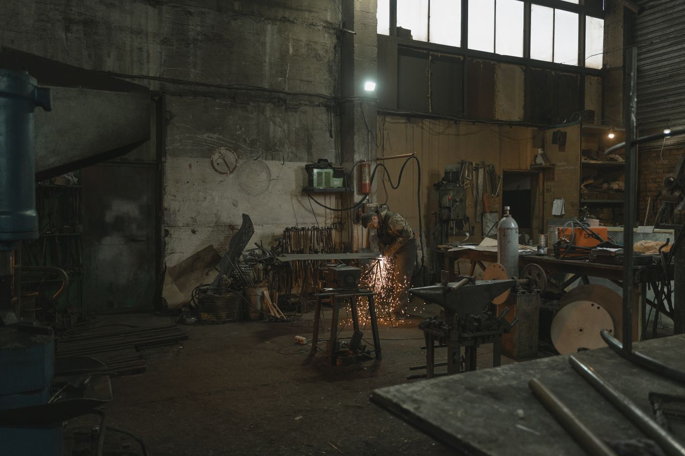

Folio 03 — The Workshop
Twenty-three seasons of other people's parades.
The builder's story, the way a build runs, the rules that govern it, and the terms it is booked under — including the part most builders leave out: what happens to a float after its one morning.
The builder
Wouter Klaassen pinned his first dahlia at fourteen, standing on a crate in a neighbour's shed because the corso association in Lisse was short of hands and he was tall for his age. Pinning is the bottom rung of float building and the best education in it: you learn in one night that a float is not a picture but a surface — measured in square metres, counted in flowers, and dying from the moment it is finished.
He apprenticed as a welder, spent six winters building agricultural machinery, and kept pinning every April. In 2004 the association let him build a whole float — a class S swan boat, six metres, more enthusiasm than structure — and it survived its parade, which in this trade is a qualification. The shed on Achterweg followed in 2007. Since then the workshop has built 63 floats, and its education has continued in the usual way: one jammed turntable, one heron sixty centimetres too tall, and twenty-three seasons of routes that were always narrower than the drawing wanted them to be.
His standing opinion, the one clients hear first: the crowd photographs the silhouette and the jury reads the finish, but the float is judged by the street — its bridges, its corners, its camber. Design for the street and the rest can be argued about; design against it and nothing else matters.

The shed, in figures
- Workshop
- Achterweg 14, Lisse
- Building since
- 2004 · shed since 2007
- Core crew
- 5 — builder, 2 welders, draughtsman, surface lead
- Flower-week crew
- 10, plus association volunteers
- Largest build
- Class XL — 18.0 m
- Storage
- 6 floats under cover
How a build runs
The same chapters as the case files — that is deliberate1Design & the 1:20 model
Every commission starts with the route, not the drawing: the parade's regulations, its height and width limits, its tightest corner. Then the design, then a scale model at 1:20 that the association approves — or argues with — before steel exists. The model is the contract's picture; the fee is fixed against it.
2Chassis & steel
A road-legal chassis, braked and lit, with the driver's box placed where the road ahead stays visible. The driver drives from inside the structure at walking pace, guided by corner walkers — the box is positioned for sightlines, not for looks.
3Frame & form
Steel and timber frame, wire and foam form: the silhouette the crowd will photograph. Forms are checked against the route survey at full height in the yard — the yard gate is our first bridge, and it has ended more arguments than any meeting.
4Skin & surface
The skin goes on, the surface is painted or prepared for flowers. Under the Swan rule, every moving gap is taped before paint and inspected after — initialled, by a second pair of eyes.
5Lighting & mechanics
Lighting wired for the parade's own rules, mechanisms fitted with a manual lock and a hand fallback. Everything that moves is listed in the build book with its fallback beside it.
6Flower week
Counted backwards from parade morning, never forwards: pinning starts exactly as many days out as the flower count demands, inside the four-day life of a cut dahlia. The association's volunteers are welcomed, fed, and counted in the hours like anyone else.
7The avenue
Parade morning: two full cycles of every mechanism, watched by the avenue crew. Then the float goes out with its driver, its corner walkers and its mechanic, and for ninety minutes it belongs to the street. Our job on the day is to be unnecessary.
The rules that govern
- The parade's regulations govern. Height, width, weight and materials limits are issued by each parade organisation; they are the brief. Where a drawing and a regulation disagree, the regulation wins.
- The driver must see the road. The driver's box is placed for sight of the road ahead and the corners; corner walkers with flags cover the blind arcs. No figurehead is worth a blind driver.
- Materials answer to fire rules. Foams and fabrics are treated or certified to the parade's stated standard; nothing loose rides above the crowd line; everything detachable is bolted, pinned or left in the shed.
- Turning is measured, not hoped. The route's tightest corner is walked and measured at survey; a float that cannot make it on paper does not get built to find out.
- Flowers are perishable by the hour. A cut dahlia holds four days. The whole calendar of a flower build is that fact, counted backwards.
The honesty page & the terms
Printed in every issue, unchangedWhose float it is
A float belongs to the association that commissioned it — its theme, its prize, its photographs, its name on the programme. The workshop claims the build, and only the build: our name is on the workshop door, in the programme's builder credit, and nowhere on the float itself. When a jury hands over a prize, they hand it to the right people. We were paid in money, which is the correct currency for a builder.
After parade day
A float's life does not end at the finish line, and the terms say what happens next, at practice level, before the build starts. Storage: under cover in the shed at €140 per month per float, or returned to the association's own barn. Re-skin: a sound structure is surveyed free within two seasons and quoted against the fee table — the Mill's file on page 02 is the worked example. Dismantling: when a structure is truly spent, the workshop strips it — steel and timber return to stock, mechanisms are kept for spares, and the flowers, as always, are composted within the week. Nothing decorated goes to landfill that could have been a chassis.
Engagement terms
- Booking window. Designs close seven months before parade day — for the April corsos, the previous September. The planner on the cover page shows why: the stages and the flower week take what they take.
- The fee. Quoted from Table F1 against the approved 1:20 model, line by line. Deposit 30% on model approval, 40% when the chassis stands, the balance on parade morning — after the float has paraded.
- Changes. A theme change after the model is a new design and is charged as one. A size change is re-run through the planner in the client's presence.
- Failure. If a mechanism of ours fails on the avenue, the repair and the mechanics share of the fee are ours — that clause was written by the Swan, and it has been in the terms ever since.
- Weather. A parade cancelled by its organisation is rescheduled or stored at cost; flower work already pinned is charged as worked, because the flowers were real.
Enquiries — 2027 Season